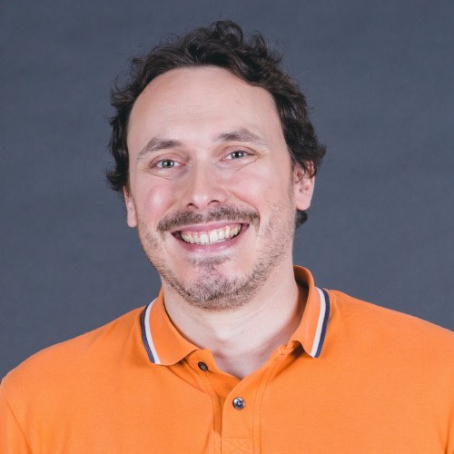

COLLABORATIVE RESEARCH HACKATHON
2026 OT Hackathon
Operational Technology Hackathon
From OT Telemetry to Intelligent Investigation
Bringing researchers and cybersecurity professionals together to explore, experiment, and build at the intersection of AI and operational technology.
01 / ABOUT THE HACKATHON
A shared space for
practical discovery.
How can AI help us understand what’s happening inside operational technology systems?
2026 OT Hackathon is a collaborative research event exploring how artificial intelligence and data-driven techniques can support operational technology security. Researchers and cybersecurity professionals will investigate telemetry, detect unusual behavior, and develop intelligent investigation approaches.
The format centers on hands-on experimentation: exploring data, connecting tools, and developing research prototypes through shared inquiry and collaborative problem-solving.
02 / RESEARCH TOPICS
Five connected areas of inquiry.
03 / AGENDA
Tentative Agenda
04 / PARTICIPATION
Bring your questions.
Build insight together.
Complete the Microsoft Forms registration form to share your attendance preferences and participation details.
Registration deadline to be confirmed.
Registration takes place on Microsoft Forms. This website does not collect participant information.
05 / ORGANIZERS
Organizers
L1nna Lab
Benjamin C. M. Fung
Professor, School of Information Studies
Associate Member, School of Computer Science
McGill University
ben.fung@mcgill.caCamille Archambault
M.Sc.
School of Computer Science
McGill University
camille.archambault@mail.mcgill.caCSE Team

06 / VENUE & TRAVEL
Meet in Montréal.
Québec, Canada · December 2026
The event will take place at McGill University in Montréal, primarily in person. The room, directions, and any remote participation options will be shared once confirmed.
Hotel information, access requirements, and travel guidance are pending. Accommodation and financial support are not guaranteed.
07 / ALSO IN MONTRÉAL
2026 CMS Winter Meeting
The Canadian Mathematical Society’s Winter Meeting takes place at DoubleTree by Hilton Montréal during the same dates as the OT Hackathon.
CMS plenary lectures feature Lynda Colgan, Deanna Needell, and Malabika Pramanik.
Explore the CMS Meeting08 / OUTCOMES
Ideas to build on.
This space will share event outcomes after December 11–14, 2026, as materials become available and are approved for public release.
Prototypes & demonstrations
Public summaries of experimental approaches and technical demonstrations may be shared here.
Research insights
Approved findings, lessons learned, and open research questions may inform future collaboration.
Resources to revisit
Links to publicly released code, presentations, or documentation will be added when available.
These are possible forms of sharing, not promised deliverables. No event results have been published yet.
09 / FAQ & CONTACT
Questions before you register?
Can I participate remotely?
The event is primarily in person. Remote participation options are being explored and are not yet confirmed.
Where can I find technical preparation information?
Detailed preparation instructions and technical access information will be provided to participants separately once arrangements are confirmed.
Will outcomes be available publicly?
The Outcomes section will link to materials approved for public release after the event. Availability will depend on the work produced and any sharing requirements.